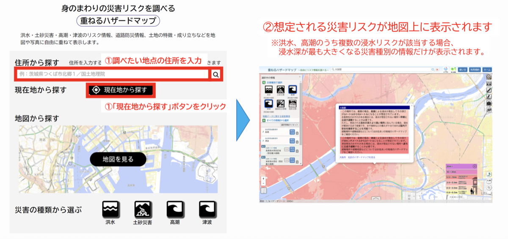
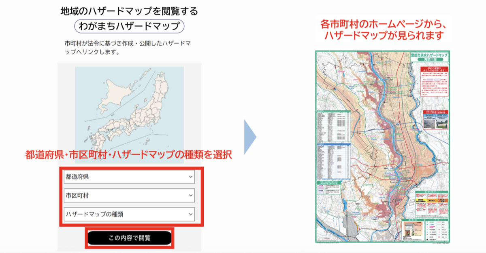

A
国のハザードマップ
全国どこでも同じ形式。まずおおまかに確認したいときに。

- 住所を入力する
- 洪水・内水氾濫・高潮・土砂災害を選ぶ
- 自宅や通る道の色を見る
- 浸水深と土砂災害警戒区域等の凡例を確認する
Step 01
ハザードマップを使って、浸水だけでなく土砂災害も含め、自宅や生活圏の危険を読み取れるようになりましょう。
洪水・内水氾濫・高潮・土砂災害が起きたとき、どこが危険かを示した地図です。「国」と「自治体」の地図があり、両方を確認すると地域の詳しい情報を補えます。
全国どこでも同じ形式。まずおおまかに確認したいときに。

地域の詳しい浸水・土砂災害情報や避難場所、注意事項を確認したいときに。

土砂災害と浸水では、安全確保の考え方が異なります。自宅だけでなく、家族が日常的に過ごす場所や避難経路も、災害ごとに確認してください。
地図上で次の場所を一つずつ探し、上の2種類のリスクと安全な移動経路を確認しましょう。